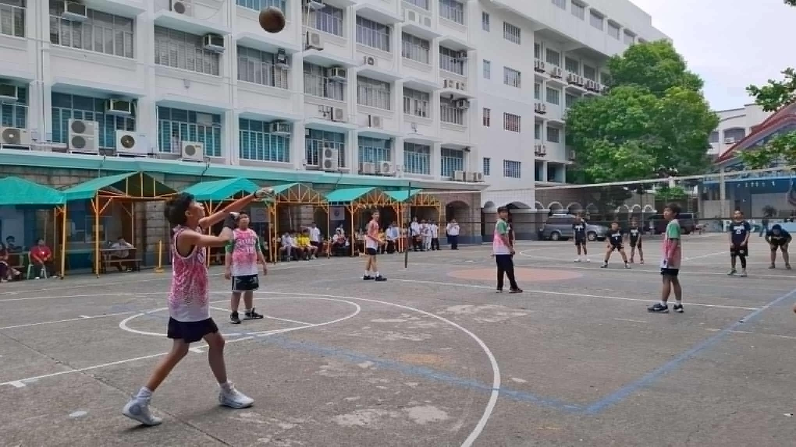

Intrams
Held on: October 1 - October 11, 2024
 Pasig Catholic College successfully opened its much-anticipated Intramurals for the school year 2024-2025, marking a week of sportsmanship, camaraderie, and excitement. The event, a staple in the school calendar, provided students with the opportunity to showcase their athletic skills, teamwork, and competitive spirit. The week-long Intramurals not only showcased athletic talent but also emphasized the importance of physical fitness, teamwork, and sportsmanship. Events like these foster life skills, encourage collaboration, and help students discover and hone their abilities.
Pasig Catholic College’s Intramurals continues to be a platform for developing well-rounded students, strengthening the sense of community, and promoting a balanced school experience. The event underscores the value of sports in nurturing both physical and mental well-being among the youth.